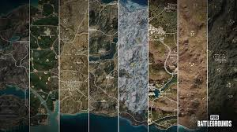

"Швидше, шукайте зброю!" — крикнув Артем, спускаючись по сходах. На другому поверсі він знайшов дробовик. "У мене є щось!"
Олена і Сергій обшукували класи, натрапивши на кілька рюкзаків і аптечок. "Це знадобиться!" — вигукнула Олена, коли знайшла повну аптечку.
Раптом у коридорі почулися гучні постріли. "Вони вже тут!" — прокоментував Сергій, прислухаючись до звуків. "Виходьте з приміщення!"
Вони швидко перебралися до вікна, де побачили ворогів, що штурмували перший поверх. "Давайте їх зустрінемо," — сказав Артем, намагаючись зайняти позицію.
Коли вороги зайшли до будівлі, команда вистрілила, завдавши влучного удару. Постріли пролунали в тиші, і швидка реакція дійсно вирішила результат.
"Два down!" — вигукнув Сергій, коли один з ворогів упав на підлогу. "Ще один зліва!"
Олена відкрила вогонь, не даючи ворогам шансів на контратаку. Після короткої, але запеклої сутички, вони впоралися з противниками. Але з іншого боку школи вже чувся новий звук — гучні кроки.
"Вони нас оточують!" — закричав Артем. "Виходимо на дах!"
Команда піднялася на дах, де відкривався огляд на всю територію. Вони побачили ворогів, які підійшли ближче. "Готуйтеся!" — промовила Олена, намагаючись прицілитися.
Коли вороги наблизилися, команда відкрила вогонь з даху. Постріли рвонули в повітрі, заповнюючи простір звуками війни. Вороги відступили, але з ними була ще одна команда, яка вже підходила.
"Тримайтеся разом!" — сказав Сергій, усвідомлюючи, що часом навіть найкраща стратегія може не спрацювати. Вони швидко спустилися з даху і знайшли укриття в одному з класів.
Коли команда пересувалася, серце кожного билося в ритмі адреналіну. Вони знали, що залишилися лише кілька хвилин до закриття зони. "Потрібно рухатися далі," — сказав Артем. "Ми не можемо залишатися тут."
Олена і Сергій кивнули. Вони вийшли з класу, готові до нових випробувань, зі зброєю на готові. Кожен із них знав, що перемога вимагатиме від них всього, що вони мають.
З усією рішучістю, вони покинули школу, вирушаючи в невідомість, готові до нових битв і пригод.